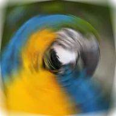

Desenfoque de giro

Desenfoca la capa en círculos alrededor de un punto, como si estuviera girando.
Ajustes
| Ajuste | Tipo | Rango | Predeterminado |
|---|---|---|---|
| Centro | Punto (X, Y) | -1 a 2 | 0.5, 0.5 |
| Ángulo | Ángulo | 0° a 360° | 5° |

Desenfoca la capa en círculos alrededor de un punto, como si estuviera girando.
| Ajuste | Tipo | Rango | Predeterminado |
|---|---|---|---|
| Centro | Punto (X, Y) | -1 a 2 | 0.5, 0.5 |
| Ángulo | Ángulo | 0° a 360° | 5° |